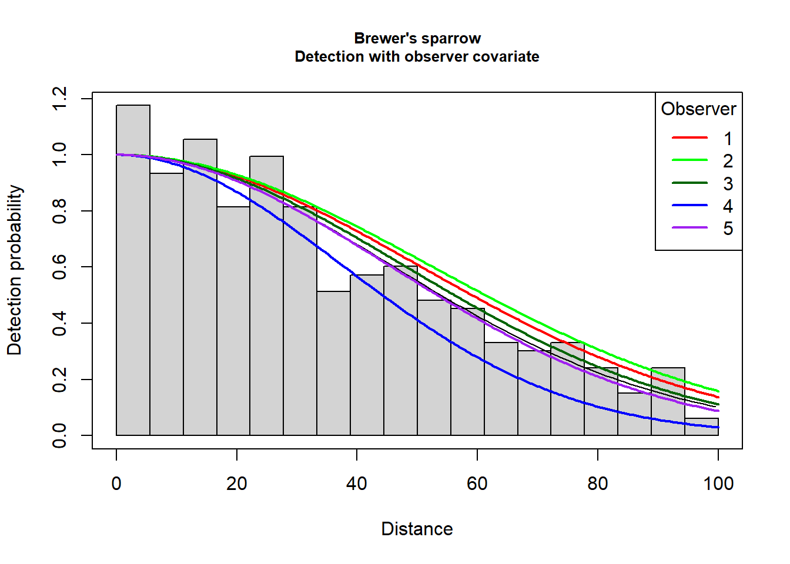
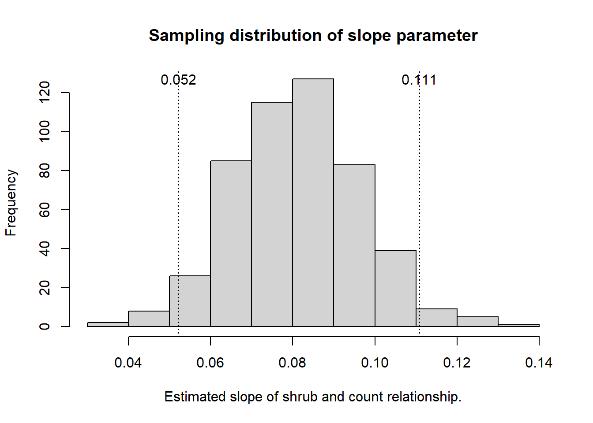

library(Rdistance)
data("sparrowDetectionData")
data("sparrowSiteData")
sparrowSiteData$myCount <- tapply(sparrowDetectionData$groupsize,
sparrowDetectionData$siteID, sum)
sparrowSiteData$myCount[is.na(sparrowSiteData$myCount)] <- 0
library(Distance)Effect of habitat covariate upon estimated density—lines
Investigators often wish to make inferences from their surveys beyond simply reporting “What is the animal density?” Ecological curiosity desires answers to questions such as
What effect does change in habitat characteristic X have upon animal density?
Answers to such questions are sought through use of generalised linear modelling (of which analysis of variance and regression are subsets). However, simple modelling of counts fails to take into account imperfect detectability. When detectability is imperfect, the response variable possesses uncertainty derived from uncertainty in the probability of detection.
A number of authors have recognised the need to incorporate this uncertainty into the analysis of habitat effects upon estimated density. One approach (employed here) conducts the analyses in two stages: first detectability is estimated and \(P_a\) or \(\mu\) or \(\rho\) is estimated. A second stage fits a model to count data adjusting using the estimated detectability parameters. This approach is exemplified by Buckland et al. (2009). Alternatively, single state approaches have been described by Rodríguez-Caro et al. (2017).
Propagation of uncertainty from the first step into the second step is accomplished via a bootstrap, with the effective area sampled serving as an offset in the generalised linear modelling (GLM) analysis. The method described herein only applies when the link function is the log link, for the following reason.
We want to model bird density in our GLM, derived from the counts we observed on each transect. Density is defined as
\[D = \frac{n}{\text{Eff Area}} \] where \(n\) is the count on each transect.
Therefore
\[\frac{n}{\text{Eff Area}} = e^{\text{linear predictor}}\] when using a log link function.
Our count model works with n as the response variable \[
\begin{align}
n &= \text{Eff Area} \cdot e^{\text{linear predictor}} \\
&= e^{\text{linear predictor} + log(\text{Eff Area})}
\end{align}
\]
making \(log(\text{Eff Area})\) the offset. If other link functions are used, the offset will be different.
Ecological question and data
We present an example of such an analysis, using data from the package RDistance (McDonald et al., 2019). We fit detection detection functions to data using the Distance package Miller et al. (2019). We analyse a line transect survey consisting of 72 transects with interest in effect of habitat features upon density of Brewer’s sparrows (Spizella breweri) (Carlisle & Chalfoun, 2020). The data organisation is one data frame containing information on detections and another data frame containing information for each transect.
Programming matters
Before walking through the code, we provide some guidance regarding adaptation of this approach for your data. The code is not sufficiently modularised so that you can merely slot your data into a function. There are matters to consider regarding data organisation, naming of data frame columns, choice of detection functions to fit and specification of count model used for inference. These points are summarised in the box below.
Important
Programming details to adapt for your use
- Check the data organisation
- follows the layout of
RDistance:- data frame with detections
- data frame with transect-level covariates
- data frames eventually are merged, but create them separately
- check the field names of the data frames for compatibility with the
Distancepackage
- follows the layout of
- Recognise your survey design should have a large number of replicate transects
- Detection function modelling described herein uses covariates specific to this data set
- The GLM model is specified just once and the formula object is reused as needed
- Exercise of this code has only been applied to continuous univariate predictors
- More complex models could be fitted, but the graphical output may be compromised
- Figure-generating code adapts to the GLM model formula
- however graphic code breaks of explanatory covariate is a factor covariate
- There is no error trapping code, specifically in the bootstrapping routine
Analysis of line transect survey
Data organisation
In Carlisle’s data set, sightings information is kept separate from information about each site. For our purposes, we will merge those together. In addition, some field names are changed for consistency with functions in the Distance package.
newsparrow <- merge(sparrowDetectionData, sparrowSiteData, by="siteID", all=TRUE)
names(newsparrow) <- sub("observer", "obs", names(newsparrow))
names(newsparrow) <- sub("dist", "distance", names(newsparrow))
names(newsparrow) <- sub("length", "Effort", names(newsparrow))Analysis parameters specification
Although not formally written as a set of functions, we bring to the front of the code arguments the user will need to change to alter to suite their needs. Candidate transect-level predictors for the detection function are observer, bare, herb, shrub, height, shrubclass. The same predictors, with the exception of observer could be used to model the sparrow counts.
Warning
pointtransect <- FALSE # survey conducted using lines or points
dettrunc <- 100 # truncation for detection function
myglmmodel <- as.formula(myCount ~ shrub + offset(log(effArea))) # habitat model to fit to animal density
nboot <- 500 # number of bootstrap replicates
set.seed(19191) # random number seedFit detection function
We fit a series of detection function models using the transect-level covariates available in the Brewer’s sparrow data set.
surveytype <- ifelse(pointtransect, "point", "line")
woo.o <- ds(data=newsparrow, truncation=dettrunc, formula=~obs,
transect=surveytype, quiet=TRUE)
woo.obare <- ds(data=newsparrow, truncation=dettrunc, formula=~obs+scale(bare),
transect=surveytype, quiet=TRUE)
woo.oht <- ds(data=newsparrow, truncation=dettrunc, formula=~obs+scale(height),
transect=surveytype, quiet=TRUE)
woo.oshrc <- ds(data=newsparrow, truncation=dettrunc, formula=~obs+shrubclass,
transect=surveytype, quiet=TRUE)
woo.ht <- ds(data=newsparrow, truncation=dettrunc, formula=~scale(height),
transect=surveytype, quiet=TRUE)
woo.shrc <- ds(data=newsparrow, truncation=dettrunc, formula=~shrubclass,
transect=surveytype, quiet=TRUE)
woo.shrub <- ds(data=newsparrow, truncation=dettrunc, formula=~scale(shrub),
transect=surveytype, quiet=TRUE)
woo <- ds(data=newsparrow, truncation=dettrunc, formula=~1,
transect=surveytype, quiet=TRUE)
knitr::kable(summarize_ds_models(woo.o, woo.obare, woo.oht, woo.oshrc,
woo.ht, woo.shrc, woo.shrub, woo), digits=3,
caption="Halfnormal detection function model selection of covariates.", row.names = FALSE)| Model | Key function | Formula | C-vM p-value | \(\hat{P_a}\) | se(\(\hat{P_a}\)) | \(\Delta\)AIC |
|---|---|---|---|---|---|---|
| Half-normal | ~shrubclass | 0.511 | 0.559 | 0.025 | 0.000 | |
| Half-normal | ~scale(height) | 0.492 | 0.558 | 0.025 | 0.325 | |
| Half-normal | ~scale(shrub) | 0.476 | 0.559 | 0.025 | 1.002 | |
| Half-normal | ~1 | 0.469 | 0.563 | 0.025 | 3.154 | |
| Half-normal | ~obs + scale(bare) | 0.659 | 0.555 | 0.025 | 5.109 | |
| Half-normal | ~obs + shrubclass | 0.652 | 0.556 | 0.025 | 5.533 | |
| Half-normal | ~obs + scale(height) | 0.658 | 0.556 | 0.025 | 5.672 | |
| Half-normal | ~obs | 0.587 | 0.559 | 0.025 | 7.148 |
All of the candidate models fit the Brewer’s sparrow line transect data. Also note that the estimate detection probability of all six models is the same to the third decimal. There is a small difference in AIC between the factor covariate shrubclass and the continuous covariate height. Simply for the purposes of demonstration, we will base our inference on the detection function that includes observer as a covariate. There is likely little effect of this model selection choice upon the ecological question of interest.
Plot of detection function
plot(woo.o, showpoints=FALSE, main="Brewer's sparrow\nDetection with observer covariate",
pdf=pointtransect)
add_df_covar_line(woo.o, data.frame(obs="obs1"), col="red", lwd=2, pdf=pointtransect)
add_df_covar_line(woo.o, data.frame(obs="obs2"), col="green", lwd=2, pdf=pointtransect)
add_df_covar_line(woo.o, data.frame(obs="obs3"), col="dark green", lwd=2, pdf=pointtransect)
add_df_covar_line(woo.o, data.frame(obs="obs4"), col="blue", lwd=2, pdf=pointtransect)
add_df_covar_line(woo.o, data.frame(obs="obs5"), col="purple", lwd=2, pdf=pointtransect)
legend("topright", title="Observer", legend=1:5,
lwd=2, lty=2, col=c("red", "green", "dark green", "blue", "purple"))
Prepare for GLM computation
Considerable processing is necessary to correctly calculate the offset value for the GLM. The offset is the effective area sampled by each transect. Effective area \((EA)\) is computed differently, depending upon whether sampling was done with line or point transects.
- For line transects the computation uses the effective strip half-width \((ESW)\) multiplied by 2 (for each side of the transect), multiplied by the transect length. \(ESW\) is derived for each detection by acquiring the detection probability for the detection from the fitted detection function object
detfnobj$ddf$fitted. However a detection probability is only computed for detections at distances less than the truncation distance; so some coding is required to deal with detections beyond the truncation distance. \(ESW\) is derived from \(P_a\) as \(P_a \cdot w\) where \(w\) is the truncation distance. - For point transects, effective area is computed as \(\pi \cdot P_a \cdot w^2\). This value is returned directly when the
predict()function is used, but is derived by calculation from the fitted detection function objectdetfnobj$ddf$fittedfor each detection.
There is also a distinction between line and point transect computations regarding units in which data are recorded. For line transect example of Brewers Sparrows, Effort was measured in meters, but we wish to produce our estimates of density in numbers per hectare. With Thresher Sparrows, radial detection distance was measured in meters, but we wish to measure bird density in numbers per hectare. In both cases, division by 10000 to convert square meters to hectares.
Because only need transect level information, the observation-level information can be removed, to make computation easier. However, transects on which animals were not detected (counts=0) must also be carried forward to the GLM analysis; because 0’s constitute legitimate observations. If the offset values remained missing values (NA), the relationship between animal density and the predictor covariate(s) would not be properly estimated.
effAreafn <- function(detfnobj, newdata, areaconv, truncation, pointflag) {
#
# Input: detfnobj - model object created by `ds()`
# newdata - data frame of detections and site-level covariates
# areaconv - conversion of transect length units to area units (m2 to ha for example)
# truncation - truncation distance for detection function fit
# pointflag - TRUE if point transect survey, FALSE for line transects
#
# Output: data frame of transects with effective area appended for each transect (to be used as offset)
#
newdata$Pa <- NA
k <- 0
for (i in 1:dim(newdata)[1]) {
if(newdata[i, "distance"] <= truncation & !is.na(newdata[i,"distance"])) {
k <- k+1
newdata$Pa[i] <- detfnobj$ddf$fitted[k]
}
}
if(!pointflag) {
newdata$effArea <- ifelse(is.na(newdata$Pa), NA, 2 * newdata$Pa * truncation * newdata$Effort / areaconv)
}else{
newdata$effArea <- ifelse(is.na(newdata$Pa), NA, newdata$Pa * truncation^2 * pi / areaconv)
}
result <- newdata[!duplicated(newdata$siteID),]
# newdata must contain all covariates used in the detection function!
if(!pointflag) {
# predict for line transects when esw=TRUE returns the ESW that needs to be converted to effective area
result$effArea <- ifelse(result$myCount==0,
2 * predict(detfnobj,
newdata=data.frame(obs=result$obs, bare=result$bare,
herb=result$herb, shrub=result$shrub,
height=result$height),
esw = TRUE)$fitted * result$Effort / areaconv,
result$effArea)
}else{
# predict for point transects when esw=TRUE returns the effective area
result$effArea <- ifelse(result$myCount==0,
predict(detfnobj,
newdata=data.frame(obs=result$obs, bare=result$bare,
herb=result$herb, shrub=result$shrub,
height=result$height),
esw = TRUE)$fitted / areaconv,
result$effArea)
}
return(result)
}
sitesadj <- effAreafn(woo.o, newsparrow, 10000, dettrunc, pointflag = FALSE)Estimate relationship of density and covariate
Fit a GLM to the observed counts, using as an offset the estimated effective area. By default, specifying family as poisson assumes a log link function. Consequently, the offset must also use the log transform.
To generalise the code, and recognising the same call to glm() will need to be made elsewhere in this analysis, we specify the GLM model we wish to fit as an object of type formula. This was specified in the Analysis parameters specification section above.
univarpredictor <- all.vars(myglmmodel)[2]
glmmodel <- glm(formula=myglmmodel, family="poisson", data=sitesadj)
modelsum <- summary(glmmodel)
tablecaption <- paste("GLM coefficients from counts as function of",
univarpredictor, "with log(effective area) offset.")
kable(modelsum$coef, digits=4, caption=tablecaption)| Estimate | Std. Error | z value | Pr(>|z|) | |
|---|---|---|---|---|
| (Intercept) | -1.0565 | 0.1397 | -7.5649 | 0 |
| shrub | 0.0789 | 0.0096 | 8.1836 | 0 |
Visualise
Even though we have computed the effective area for each transect based upon the fitted detection function, we have not used that effective area to adjust the observed counts. The simple formula
\[\hat{D}_i = \frac{n_i}{EA_i}, i = 1, \ldots , n_{transects}\] where \(EA_i\) is the effective area for the \(i^{th}\) transect, describes this adjustment.
We plot the estimated density against the continuous univariate predictor.
sitesadj$density <- sitesadj$myCount / sitesadj$effArea
# plot(sitesadj[, univarpredictor], sitesadj$density, pch=20,
# firstplot <- recordPlot()Incorporate uncertainty
We resample our transects with replacement to assess the uncertainty in our point estimates of the relationship between the habitat covariate and the response variable. Specify the number of bootstrap resamples required and allocate storage for the replicate estimates of the GLM parameters: intercept and slope.
intercept.est <- vector("numeric", length=nboot)
slope.est <- vector("numeric", length=nboot)Specify the original site data frame sparrowSiteData in the following code. The code will harvest the estimated slope and intercept coefficients from each replicate. It is uncertainty in the slope coefficient (\(\widehat{\beta_1}\)) that determines our inference about the effect of shrub cover upon Brewer’s sparrow density. The uncertainty in the slope coefficient as calculated by the code below differs from the uncertainty reported in Table 1 because below we are incorporating uncertainty in the relationship induced by uncertainty in the detection function, which is not recognised in Table 1.
for (theboot in 1:nboot) {
newdetects <- data.frame()
bob <- sample(sparrowSiteData$siteID, replace=TRUE, size=length(unique(sparrowSiteData$siteID)))
for (bootsite in 1:length(bob)) {
thissite <- bob[bootsite]
glob <- newsparrow[newsparrow$siteID==thissite, ]
glob$siteID <- sprintf("rep%02d", bootsite)
newdetects <- rbind(newdetects, glob)
}
newdetects <- newdetects[order(newdetects$siteID), ]
# Refit the detection function model, using observer as a covariate, to the bootstrap replicate
detfnmod <- ds(data=newdetects, truncation=dettrunc, formula=~obs, quiet=TRUE)
# Compute effective area offset for each transect
bootsitesadj <- effAreafn(detfnmod, newdetects, 10000, dettrunc, pointflag = FALSE)
# refit the GLM for this bootstrap replicate
glmresult <- glm(formula= myglmmodel, family="poisson", data=bootsitesadj)
intercept.est[theboot] <- coef(glmresult)[1]
slope.est[theboot] <- coef(glmresult)[2]
}Code below creates a comprehensive figure of the findings. Steps include
- generates the predicted relationship of the habitat and Brewer’s sparrow density for each bootstrap replicate,
- computes point-wise confidence intervals,
- plot the estimated relationship, all bootstrap replicate relationships and the confidence intervals,
- insets sampling distribution of (\(\widehat{\beta_1}\)) and places a confidence interval on the point estimate of (\(\widehat{\beta_1}\)).
predData <- data.frame(predictor=seq(min(sparrowSiteData[ , univarpredictor]),
max(sparrowSiteData[, univarpredictor]), length.out=50))
orig.fit <- data.frame(x=predData$predictor,
y=exp(coef(glmmodel)[1] + (coef(glmmodel)[2]*predData$predictor)))
# long form data frame of all replicate predicted values
longform <- NULL
for (i in 1:nboot) {
mypredict <- exp(intercept.est[i] + (slope.est[i]*predData$predictor))
longform <- c(longform, mypredict)
}
big.df <- data.frame(predict=longform)
big.df$shrub <- predData$predictor
big.df$group <- rep(1:nboot, each=length(predData$predictor))
alpha <- 0.05
# point-wise confidence intervals
quants <- big.df %>%
group_by(shrub) %>%
summarise(lower = quantile(predict, alpha/2),
upper = quantile(predict, 1-alpha/2)) %>%
tidyr::gather(stat, value, -shrub)
# main plot
b0label <- bquote(~widehat(beta[0]) == .(round(coef(glmmodel)[1],4)))
b1label <- bquote(~widehat(beta[1]) == .(round(coef(glmmodel)[2],4)))
fig1 <- ggplot(dat=sitesadj, aes(shrub, density)) +
geom_point() +
geom_line(aes(y=predict, group=group), big.df, alpha=0.1) +
geom_line(aes(y=y, x=x), orig.fit, colour="red", size=2) +
geom_line(aes(y=value, group=stat), quants, col='blue', size=1) +
annotate(geom="text", x=20, y=0.6, label= b0label, size=5) +
annotate(geom="text", x=20, y=0.3, label= b1label, size=5) +
labs(x="Percent shrub cover", y="Estimate bird density (per ha)",
title="Brewer's sparrow density as function of shrub cover") +
theme_bw()
# inset histogram for sampling distribution
bounds <- quantile(slope.est, probs = c(alpha/2, 1-alpha/2))
fig2 <- ggplot() + aes(x=slope.est) + geom_histogram() +
geom_vline(xintercept=bounds, size=1) +
labs(x="Estimate of slope", y="Frequency") +
annotate(geom="text", x=.025, y=11, label=round(bounds[1],3)) +
annotate(geom="text", x=.13, y=11, label=round(bounds[2],3))
complete <- fig1 + inset_element(fig2, right=.5, bottom=.4, left=.01, top=.99)
complete
Inference regarding the habitat covariate
To assess the effect of the transect-level environmental covariate upon bird density, we focus our attention on \(\hat{\beta_1}\). The greater in magnitude the slope of the covariate, the greater the effect of the covariate upon animal density. If the estimated slope (\(\hat{\beta_1}\)) is indistinguishable from zero, we infer the habitat covariate has no influence upon animal density. For the habitat characteristic shrub, there is a positive response of Brewer’s sparrow to increasing shrub cover.
xlabel <- paste("Estimated slope of", univarpredictor, "and count relationship.")
hist.slope <- hist(slope.est, main="Sampling distribution of slope parameter",
xlab=xlabel)
cibounds <- quantile(slope.est, probs = c(.025,.975), na.rm=TRUE)
abline(v=cibounds, lty=3)
text(cibounds, max(hist.slope$counts), round(cibounds,3))
Summary
Inference regarding the relationship between animal density and habitat covariates is invariably made more difficult when detectability of animals is imperfect. Adjusting number of animals detected for this estimated probability of detection introduces uncertainty into investigation of the relationship. If this added uncertainty is disregarded, faulty inference (believing a relationship exists where there is none) can result.
In reality, it is more challenging to propagate the uncertainty via the bootstrap, than to calculate the point estimate of the relationship. Nevertheless, sound inference is achieved by adequately incorporating uncertainty in all accountable forms in our analysis.
This document contains code to perform this count model analysis for either line or point transects. What remains is to generalise this framework further, e.g. multiple predictor variables or more complex survey designs.
Acknowledgements
The heart of the analysis presented was based upon code and ideas presented by Jason Carlisle and Trent McDonald in their RDistance wiki.
References
Buckland, S. T., Russell, R. E., Dickson, B. G., Saab, V. A., Gorman, D. N., & Block, W. M. (2009). Analysing designed experiments in distance sampling. Journal of Agricultural, Biological, and Environmental Statistics, 14, 432–442. https://doi.org/10.1198/jabes.2009.08030
Carlisle, J., & Chalfoun, A. (2020). The abundance of Greater Sage-Grouse as a proxy for the abundance of sagebrush-associated songbirds in Wyoming, USA. Avian Conservation and Ecology, 15(2). https://doi.org/10.5751/ACE-01702-150216
McDonald, T., Carlisle, J., & McDonald, A. (2019). Rdistance: Distance sampling analysis for density and abundance estimation.
Miller, D. L., Rexstad, E., Thomas, L., Marshall, L., & Laake, J. L. (2019). Distance sampling in R. Journal of Statistical Software, 89(1), 1–28. https://doi.org/10.18637/jss.v089.i01
Rodríguez-Caro, R. C., Oedekoven, C. S., Graciá, E., Anadón, J. D., Buckland, S. T., Esteve-Selma, M. A., … Giménez, A. (2017). Low tortoise abundances in pine forest plantations in forest-shrubland transition areas. PLOS ONE, 12(3), e0173485. https://doi.org/10.1371/journal.pone.0173485